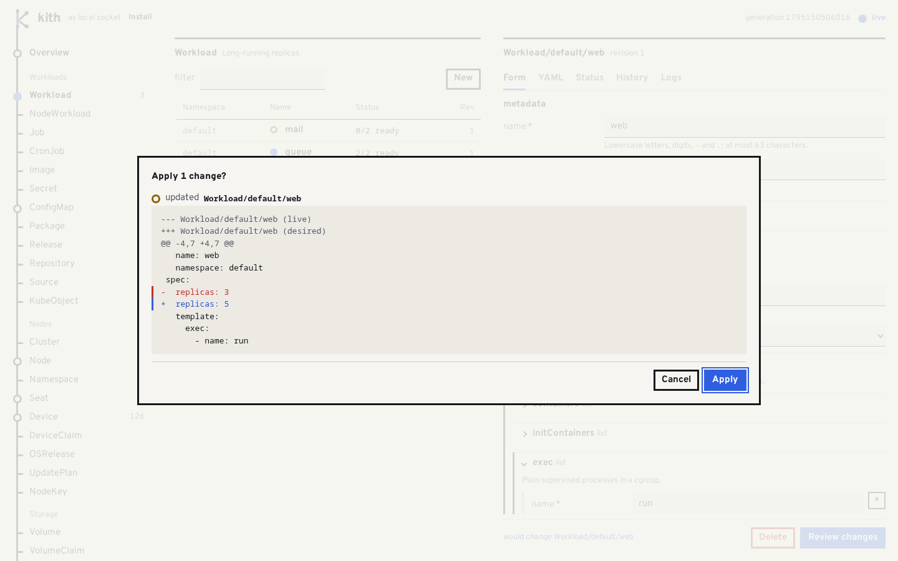
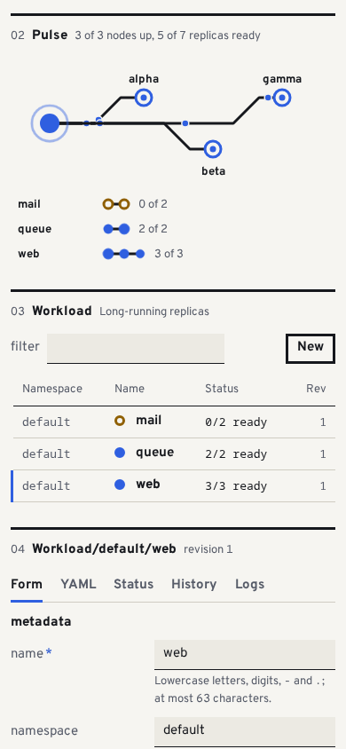

Web UI
Every node serves a page that shows the cluster and changes it: what is running where, a form for every kind (drawn from its schema, your own kinds included), the YAML beside it, status, history with rollback, and output. An apply or a rollback shows its diff first; a delete asks.


On a node, as its admin:
kith ui # prints http://127.0.0.1:PORT/SECRET/ui/ ; open it
kith ui --port 7000 # a port of your choosing
From your own machine, through SSH (kith ui --port 7000 on the node, then):
ssh -L 7000:127.0.0.1:7000 node # and open the printed address here
The address is the key: kith ui passes on only requests under that secret path, asked for under this machine's own name, by its own page, and stops when you stop it. Keep it to yourself.
As an Identity, a browser can also open https://kith:7443/ui/ on a node's TLS port and act as that Identity, with what its Roles allow and no more. It needs the Identity's certificate (openssl pkcs12 -export -in alice.crt -inkey alice.key -out alice.p12, imported into the browser), ca.crt trusted, and the name kith pointing at a node (a line in /etc/hosts).
- The page is a few files inside kithd, open to all: everything it asks is not. No framework, nothing fetched from elsewhere (its content policy forbids it): it works with no internet.
- It asks kithd as you: the same API, rules and audit log as
kithandcurl;POST /v1/diffis the dry run it shows. A field the form cannot draw (a free-form object,oneOf) is a JSON box; the YAML tab edits anything. - Usage graphs have their data in
GET /v1/metrics?range=15m|1h|6h|24h(default1h): each node's CPU (0 to 1), memory, state disk, disk read and write, network receive and send (bytes per second, every interface butlo) and 1-minute load, and each Workload's CPU (cores) and memory, as arrays oldest first (nullwhere nothing was sampled), the last point atendandstepseconds apart. It takes the right to list Nodes. A node that does not answer in 3 seconds is"missing": trueand the rest comes back. The page itself that draws them is not here yet. - Not yet: logging in without a certificate (OIDC), secrets hidden until asked for.